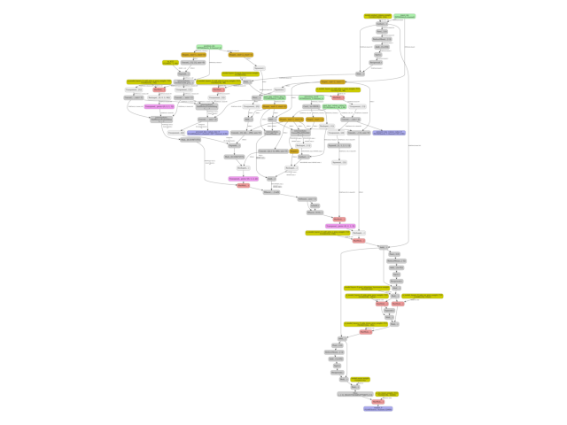
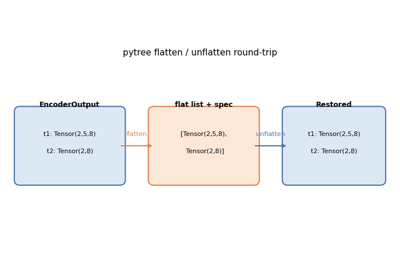
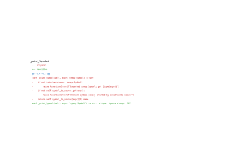

Note
Go to the end to download the full example code.
Export a LLM with InputObserver (with Tiny-LLM)¶
The main issue when exporting a LLM is the example on HuggingFace is based on method generate but we only need to export the forward method. Example InputObserver with Transformers Cache gives details on how to guess dummy inputs and dynamic shapes to do so. Let’s see how to simplify that.
Dummy Example¶
Let’s use the example provided on arnir0/Tiny-LLM.
import pandas
from transformers import AutoModelForCausalLM, AutoTokenizer
from yobx import doc
from yobx.helpers import string_type
from yobx.helpers.rt_helper import onnx_generate
from yobx.torch import (
register_flattening_functions,
apply_patches_for_model,
to_onnx,
InputObserver,
)
MODEL_NAME = "arnir0/Tiny-LLM"
tokenizer = AutoTokenizer.from_pretrained(MODEL_NAME)
model = AutoModelForCausalLM.from_pretrained(MODEL_NAME)
def generate_text(
prompt,
model,
tokenizer,
max_length=50,
temperature=0.01,
top_k=50,
top_p=0.95,
do_sample=True,
):
inputs = tokenizer(prompt, return_tensors="pt")
input_ids = inputs["input_ids"]
attention_mask = inputs["attention_mask"]
outputs = model.generate(
input_ids=input_ids,
attention_mask=attention_mask,
max_length=max_length,
temperature=temperature,
top_k=top_k,
top_p=top_p,
do_sample=do_sample,
)
generated_text = tokenizer.decode(outputs[0], skip_special_tokens=True)
return generated_text
# Define your prompt
prompt = "Continue: it rains, what should I do?"
generated_text = generate_text(prompt, model, tokenizer)
print("-----------------")
print(generated_text)
print("-----------------")
Loading weights: 0%| | 0/12 [00:00<?, ?it/s]
Loading weights: 100%|██████████| 12/12 [00:00<00:00, 721.57it/s]
-----------------
Continue: it rains, what should I do?
I have a lot of people who are in the world. I have a lot of people who are in the world, and I have a lot of people who are in the world
-----------------
Replace forward method¶
We first capture inputs and outputs with an :class`InputObserver <yobx.investigate.input_observer>`. We also need to registers additional patches for transformers. Then pytorch knows how to flatten/unflatten inputs.
observer = InputObserver()
with register_flattening_functions(patch_transformers=True), observer(model):
generate_text(prompt, model, tokenizer)
print(f"number of stored inputs: {len(observer.info)}")
number of stored inputs: 3
Exports¶
The InputObserver has now enough data to infer arguments and dynamic shapes. We need more than flattening but also patches to export the model. Inferred dynamic shapes looks like:
with register_flattening_functions(patch_transformers=True):
dynamic_shapes = observer.infer_dynamic_shapes(set_batch_dimension_for=True)
kwargs = observer.infer_arguments()
and inferred arguments:
print("dynamic_shapes:", dynamic_shapes)
print("kwargs:", string_type(kwargs, with_shape=True))
dynamic_shapes: {'input_ids': {0: DimHint(DYNAMIC), 1: DimHint(DYNAMIC)}, 'attention_mask': {0: DimHint(DYNAMIC), 1: DimHint(DYNAMIC)}, 'position_ids': {0: DimHint(DYNAMIC), 1: DimHint(DYNAMIC)}, 'past_key_values': [{0: DimHint(DYNAMIC), 2: DimHint(DYNAMIC)}, {0: DimHint(DYNAMIC), 2: DimHint(DYNAMIC)}], 'logits_to_keep': None, 'kwargs': {'cache_position': {0: DimHint(DYNAMIC)}}}
kwargs: dict(input_ids:T7s1x13,attention_mask:T7s1x13,position_ids:T7s1x13,past_key_values:DynamicCache(key_cache=#1[T1s1x1x0x96], value_cache=#1[T1s1x1x0x96]),cache_position:T7s13,logits_to_keep:int)
Let’s export.
filenamec = "plot_input_observer_tiny_llm.onnx"
with (
register_flattening_functions(patch_transformers=True),
apply_patches_for_model(patch_torch=True, patch_transformers=True, model=model),
):
to_onnx(
model,
(),
kwargs=observer.infer_arguments(),
dynamic_shapes=observer.infer_dynamic_shapes(set_batch_dimension_for=True),
filename=filenamec,
)
Check discrepancies¶
The model is exported into ONNX. We use again the stored inputs and outputs to verify the model produces the same outputs.
data = observer.check_discrepancies(filenamec, progress_bar=True)
print(pandas.DataFrame(data))
0%| | 0/3 [00:00<?, ?it/s]
33%|███▎ | 1/3 [00:01<00:03, 1.97s/it]
100%|██████████| 3/3 [00:01<00:00, 1.51it/s]
abs rel sum ... inputs outputs_torch outputs_ort
0 0.000012 0.000433 0.064768 ... dict(input_ids:T7s1x13,attention_mask:T7s1x13,... #3[T1s1x1x32000,T1s1x1x13x96,T1s1x1x13x96] #3[T1s1x1x32000,T1s1x1x13x96,T1s1x1x13x96]
1 0.000010 0.001411 0.046240 ... dict(input_ids:T7s1x1,attention_mask:T7s1x14,p... #3[T1s1x1x32000,T1s1x1x14x96,T1s1x1x14x96] #3[T1s1x1x32000,T1s1x1x14x96,T1s1x1x14x96]
2 0.000010 0.001841 0.048305 ... dict(input_ids:T7s1x1,attention_mask:T7s1x15,p... #3[T1s1x1x32000,T1s1x1x15x96,T1s1x1x15x96] #3[T1s1x1x32000,T1s1x1x15x96,T1s1x1x15x96]
[3 rows x 18 columns]
Minimal script to export a LLM¶
The following lines are a condensed copy with less comments.
# from HuggingFace
print("----------------")
MODEL_NAME = "arnir0/Tiny-LLM"
tokenizer = AutoTokenizer.from_pretrained(MODEL_NAME)
model = AutoModelForCausalLM.from_pretrained(MODEL_NAME)
# from HuggingFace again
prompt = "Continue: it rains, what should I do?"
inputs = tokenizer(prompt, return_tensors="pt")
observer = InputObserver()
with (
register_flattening_functions(patch_transformers=True),
apply_patches_for_model(patch_transformers=True, model=model),
observer(model),
):
outputs = model.generate(
input_ids=inputs["input_ids"],
attention_mask=inputs["attention_mask"],
do_sample=False,
max_new_tokens=10,
)
filename = "plot_input_observer_tiny_llm.2.onnx"
with (
register_flattening_functions(patch_transformers=True),
apply_patches_for_model(patch_torch=True, patch_transformers=True, model=model),
):
to_onnx(
model,
(),
kwargs=observer.infer_arguments(),
filename=filename,
dynamic_shapes=observer.infer_dynamic_shapes(set_batch_dimension_for=True),
)
data = observer.check_discrepancies(filename, progress_bar=True)
print(pandas.DataFrame(data))
----------------
Loading weights: 0%| | 0/12 [00:00<?, ?it/s]
Loading weights: 100%|██████████| 12/12 [00:00<00:00, 1873.01it/s]
0%| | 0/3 [00:00<?, ?it/s]
33%|███▎ | 1/3 [00:00<00:00, 3.97it/s]
100%|██████████| 3/3 [00:00<00:00, 11.58it/s]
abs rel sum ... inputs outputs_torch outputs_ort
0 0.000012 0.000433 0.064768 ... dict(input_ids:T7s1x13,attention_mask:T7s1x13,... #3[T1s1x1x32000,T1s1x1x13x96,T1s1x1x13x96] #3[T1s1x1x32000,T1s1x1x13x96,T1s1x1x13x96]
1 0.000010 0.001411 0.046240 ... dict(input_ids:T7s1x1,attention_mask:T7s1x14,p... #3[T1s1x1x32000,T1s1x1x14x96,T1s1x1x14x96] #3[T1s1x1x32000,T1s1x1x14x96,T1s1x1x14x96]
2 0.000010 0.001841 0.048305 ... dict(input_ids:T7s1x1,attention_mask:T7s1x15,p... #3[T1s1x1x32000,T1s1x1x15x96,T1s1x1x15x96] #3[T1s1x1x32000,T1s1x1x15x96,T1s1x1x15x96]
[3 rows x 18 columns]
%% ONNX Prompt +++++++++++
onnx_generate runs the
exported ONNX model in a greedy auto-regressive loop, feeding the
present key/value tensors back as past key/values on every subsequent
call, just like the HuggingFace generate method.
onnx_tokens = onnx_generate(
filenamec,
input_ids=inputs["input_ids"],
attention_mask=inputs["attention_mask"],
eos_token_id=model.config.eos_token_id,
max_new_tokens=50,
)
onnx_generated_text = tokenizer.decode(onnx_tokens[0], skip_special_tokens=True)
print("-----------------")
print(onnx_generated_text)
print("-----------------")
-----------------
Continue: it rains, what should I do?
I have a lot of people who are in the world. I have a lot of people who are in the world, and I have a lot of people who are in the world. I have a lot of people who are in the world,
-----------------

Total running time of the script: (0 minutes 16.529 seconds)
Related examples

Registering a custom class as a pytree node

Applying patches to a model and displaying the diff